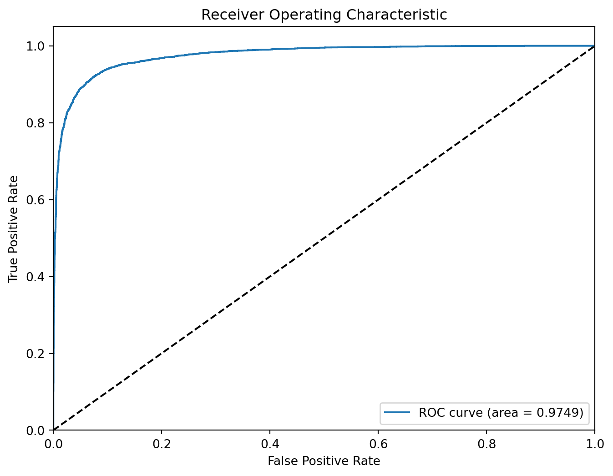

import pandas as pd
import numpy as np
import matplotlib.pyplot as plt
import seaborn as sns
import nltk
from nltk.tokenize import word_tokenize
from nltk.stem.porter import PorterStemmer
from nltk.sentiment import SentimentIntensityAnalyzer
import gensim
from gensim.parsing.preprocessing import STOPWORDS
from gensim.models import CoherenceModel
import importlib
import subprocess
import re
import warnings
import datetime
import itertools
from sklearn import svm
from sklearn.model_selection import train_test_split, cross_validate, StratifiedKFold
from sklearn.feature_extraction.text import TfidfVectorizer, CountVectorizer
from sklearn.pipeline import Pipeline
from sklearn.metrics import confusion_matrix, ConfusionMatrixDisplay, classification_report, roc_auc_score, roc_curve, make_scorer, accuracy_score, precision_score, recall_score, f1_score
from sklearn.linear_model import LogisticRegression
from sklearn.calibration import CalibratedClassifierCV
from sklearn.decomposition import LatentDirichletAllocation
from sklearn.utils import resample
from sklearn.preprocessing import StandardScaler
from scipy import stats
from scipy.sparse import hstack
import xgboost as xgb
from textblob import TextBlob
try:
importlib.import_module('textblob')
except ImportError:
subprocess.check_call(['pip', 'install', 'textblob'])Untangling Fact from Falsehood Using NLP
This project was done as part of ISSS609: Text Analytics and Applications. The analysis was performed jointly with Chock Wan Kee, Denise Tan Shi Min, Lim Li Ying, Noel Ng Ser Ying, and Tan Yanni Regine.
Introduction
The proliferation of fake news is a growing global concern, impacting public opinion, political processes, and trust in media institutions. Fake news is defined as fabricated information that mimics news media content in form but not in organizational process or intent (Lazer, et al., 2018). The spread of misinformation poses significant challenges to foster an informed citizenry as it makes people more susceptible to political misinterpretations (Guess, et al., 2020), thereby increasing the challenge of upholding credibility and integrity of information sources.
Many experiments have been designed and conducted to put Machine Learning techniques to the test in detecting fake from true news. Our project seeks to determine if detection accuracy can be improved with additional features from sentiment analysis and topic modelling. Sentiment analysis discerns the emotional tone of text, thereby providing insights to how information is framed and its potential impact on readers. Topic modelling identifies topics according to words that co-occur frequently to assess prevalent topics present in fake news.
The dataset used in this project is the “Fake News Detection” dataset from Kaggle. It contains fake and real news from 31 May 2015 to 19 Feb 2018. The two classes of data are separated into the respective “Fake” and “True” files, which will be combined for our analysis.
Methodology
We adopted a sequential approach to the analysis that is summarized in the flow chart below:

Firstly, the separate “Fake” and “True” files had to be merged into one for analysis. To differentiate between the fake and real news after merging for classification, labels were assigned to each record from the same file, 0 for real news and 1 for fake news. After merging both files, the title and text columns are concatenated to create a corpus for text preprocessing.
Next, preprocessing steps involving tokenization, stop word removal, and stemming are applied on the corpus. It was discovered that some words, such as days of the week and “say” or “said”, appeared in high frequency and did not help to distinguish one document from another. It is reasonable that these words appear frequently in news reports as they provide details on incidents which often include reported speech. In view of the above, we included these words as stop words to be removed from the corpus.
While some experiments have shown that sentiment analysis is useful in different systems and tools used for detecting fake news, few experiments included the use of topic modelling to train the classification model. In our methodology, the sentiment analysis scores, and most dominant topics are included as features to train and test the classification algorithm.
One challenge is the size of the corpus containing more than 40,000 documents. Choosing a model that can work efficiently with this corpus size will be a crucial factor.
Finally, three classification methods are used to find the best performing model in classifying fake news.
The following sections will go into the codes used and describe their functions.
Import Libraries and Datasets
Load Required Packages
Load Dataset
df_fake = pd.read_csv('data/Fake.csv')
df_true = pd.read_csv('data/True.csv')See the Top 5 Rows in Each Dataframe
df_fake.head()| title | text | subject | date | |
|---|---|---|---|---|
| 0 | Donald Trump Sends Out Embarrassing New Year’... | Donald Trump just couldn t wish all Americans ... | News | December 31, 2017 |
| 1 | Drunk Bragging Trump Staffer Started Russian ... | House Intelligence Committee Chairman Devin Nu... | News | December 31, 2017 |
| 2 | Sheriff David Clarke Becomes An Internet Joke... | On Friday, it was revealed that former Milwauk... | News | December 30, 2017 |
| 3 | Trump Is So Obsessed He Even Has Obama’s Name... | On Christmas day, Donald Trump announced that ... | News | December 29, 2017 |
| 4 | Pope Francis Just Called Out Donald Trump Dur... | Pope Francis used his annual Christmas Day mes... | News | December 25, 2017 |
df_true.head()| title | text | subject | date | |
|---|---|---|---|---|
| 0 | As U.S. budget fight looms, Republicans flip t... | WASHINGTON (Reuters) - The head of a conservat... | politicsNews | December 31, 2017 |
| 1 | U.S. military to accept transgender recruits o... | WASHINGTON (Reuters) - Transgender people will... | politicsNews | December 29, 2017 |
| 2 | Senior U.S. Republican senator: 'Let Mr. Muell... | WASHINGTON (Reuters) - The special counsel inv... | politicsNews | December 31, 2017 |
| 3 | FBI Russia probe helped by Australian diplomat... | WASHINGTON (Reuters) - Trump campaign adviser ... | politicsNews | December 30, 2017 |
| 4 | Trump wants Postal Service to charge 'much mor... | SEATTLE/WASHINGTON (Reuters) - President Donal... | politicsNews | December 29, 2017 |
Data Preparation
Inserting column “class” to identify target features
df_fake['class'] = 1
df_true['class'] = 0Merging df_true and df_fake
df_merge = pd.concat([df_true, df_fake], axis = 0)
df_merge.head() | title | text | subject | date | class | |
|---|---|---|---|---|---|
| 0 | As U.S. budget fight looms, Republicans flip t... | WASHINGTON (Reuters) - The head of a conservat... | politicsNews | December 31, 2017 | 0 |
| 1 | U.S. military to accept transgender recruits o... | WASHINGTON (Reuters) - Transgender people will... | politicsNews | December 29, 2017 | 0 |
| 2 | Senior U.S. Republican senator: 'Let Mr. Muell... | WASHINGTON (Reuters) - The special counsel inv... | politicsNews | December 31, 2017 | 0 |
| 3 | FBI Russia probe helped by Australian diplomat... | WASHINGTON (Reuters) - Trump campaign adviser ... | politicsNews | December 30, 2017 | 0 |
| 4 | Trump wants Postal Service to charge 'much mor... | SEATTLE/WASHINGTON (Reuters) - President Donal... | politicsNews | December 29, 2017 | 0 |
Let’s determine the number of articles in the corpus.
print('The number of articles in the corpus is: ', len(df_merge))The number of articles in the corpus is: 44898Combine title and text into one column for later analysis to consider both fields.
df_merge['text'] = df_merge['title'] + df_merge['text']
df_merge.head()| title | text | subject | date | class | |
|---|---|---|---|---|---|
| 0 | As U.S. budget fight looms, Republicans flip t... | As U.S. budget fight looms, Republicans flip t... | politicsNews | December 31, 2017 | 0 |
| 1 | U.S. military to accept transgender recruits o... | U.S. military to accept transgender recruits o... | politicsNews | December 29, 2017 | 0 |
| 2 | Senior U.S. Republican senator: 'Let Mr. Muell... | Senior U.S. Republican senator: 'Let Mr. Muell... | politicsNews | December 31, 2017 | 0 |
| 3 | FBI Russia probe helped by Australian diplomat... | FBI Russia probe helped by Australian diplomat... | politicsNews | December 30, 2017 | 0 |
| 4 | Trump wants Postal Service to charge 'much mor... | Trump wants Postal Service to charge 'much mor... | politicsNews | December 29, 2017 | 0 |
There are columns which we would not need for the purpose of this analysis: title, subject, and date. This can be dropped from the dataframe.
df = df_merge.drop(["title", "subject", "date"], axis = 1)
df.head()| text | class | |
|---|---|---|
| 0 | As U.S. budget fight looms, Republicans flip t... | 0 |
| 1 | U.S. military to accept transgender recruits o... | 0 |
| 2 | Senior U.S. Republican senator: 'Let Mr. Muell... | 0 |
| 3 | FBI Russia probe helped by Australian diplomat... | 0 |
| 4 | Trump wants Postal Service to charge 'much mor... | 0 |
The dataframe rows will be shuffled as during concatenation, the True and Fake classes retained their original location next to each other.
df = df.sample(frac=1, random_state=42).reset_index(drop=True)
df.head()| text | class | |
|---|---|---|
| 0 | BREAKING: GOP Chairman Grassley Has Had Enoug... | 1 |
| 1 | Failed GOP Candidates Remembered In Hilarious... | 1 |
| 2 | Mike Pence’s New DC Neighbors Are HILARIOUSLY... | 1 |
| 3 | California AG pledges to defend birth control ... | 0 |
| 4 | AZ RANCHERS Living On US-Mexico Border Destroy... | 1 |
We can check whether the number of entries in each class is relatively balanced. If they are not, imputation or under-sampling would have to be performed later during machine learning.
sns.countplot(x="class",
data = df)
plt.show()
It is possible to see that the number of entries in each class is relatively similar, eliminating the need for manipulation later on.
Text Pre-processing
The text pre-processing steps used in this project are listed below:
Removal of words that appear only in “true” or “fake” news
It can be observed from a visual check of both datasets that certain words and phrases only appear in either data set, while some words appear in both data sets. These words, as shown in the table below, are removed from the corpus as they do not contribute much to distinguish the documents. For example, hyperlink markers such as “www” appears in many articles and provides no value.
Tokenize words and change to lowercase
Next, to standardize the words in the corpus, .lower() is used to change all word cases to lower case. Following which, the text is tokenized using NLTK’s word_tokenize() function. This will treat each word as a separate component.
Remove stop words
Next, stop words are removed from the text. Stop words are words found in text there are deemed unlikely to be useful in information retrieval. Stop words can be understood as words necessary in the use of language but does not provide value for the analysis. Some common stop words are “the”, “is”, “are”. The STOPWORDS library from Gensim is used for this project as it contains the highest number of stop words (337 stop words).
Stemming
Next, stemming is applied on the remaining words to normalize text by obtaining only the stem of words. Stemming reduces the variations of a word down to single root. For example, “cats” would simply become “cat”. This is done using the .stem() function from the PorterStemmer module under NLTK.
Remove punctuation
Next, we remove all punctuation marks that are retained in the list of words after tokenization. This is achieved by using the .isalpha() function to retain only words that contain only alphabetic characters. Besides removing punctuation points, we can achieve a secondary advantage of removing numeric and special characters that may not contribute meaningfully to the analysis.
Refining pre-processing steps
Finally, after an initial round of pre-processing, it was observed that the pre-processed text contained a high frequency of the following: words that are single characters, days of the week, and “says” or “said”. Days of the week and “says” or “said” are words commonly occurring in news articles. Hence, the pre-processing step is refined to include a custom list of stop words (each day of the week, “says”, “said”), and to only retain words that are longer than one character.
The code chunk below will perform the described pre-processing steps.
## A function is defined to perform pre-processing steps for easier usage later on
custom_stop_word = ['monday', 'tuesday', 'wednesday', 'thursday', 'friday', 'saturday', 'sunday', 'said', 'says', 's', 't']
stop_words = STOPWORDS.union(set(custom_stop_word)) # setting the stopwords
stemmer = PorterStemmer() # setting the stemmer
def preprocess_tokens(text):
words = re.sub('Reuters', '', text) # removing the word Reuters as it appears in all the real news
words = re.sub('https?:\S+|www\.\S+', ' ', words) # remove URLs that begin with 'https' or 'www'
words = re.sub('bit\.ly\S+', ' ', words) # remove URLS that begin with 'bit.ly' - only appears in true news
words = re.sub('pic\.twitter\.com\S+', ' ', words) # remove URLs that begin with 'pic.twitter.com' - only appears in fake news
words = word_tokenize(words.lower()) # convert text to lowercase & split into word tokens
words = [word for word in words if not word in stop_words] # removing the stop words
words = [stemmer.stem(word) for word in words] # stemming the words
words = [word for word in words if word.isalpha()] # removing punctuation
words = [word for word in words if len(word) > 1] # remove single character words
return wordsThe preprrocess_token() function can now be applied onto the text column of our dataframe.
df['text_preprocessed'] = df["text"].apply(preprocess_tokens)
df.head()| text | class | text_preprocessed | |
|---|---|---|---|
| 0 | BREAKING: GOP Chairman Grassley Has Had Enoug... | 1 | [break, gop, chairman, grassley, demand, trump... |
| 1 | Failed GOP Candidates Remembered In Hilarious... | 1 | [fail, gop, candid, rememb, hilari, mock, eulo... |
| 2 | Mike Pence’s New DC Neighbors Are HILARIOUSLY... | 1 | [mike, penc, new, dc, neighbor, hilari, troll,... |
| 3 | California AG pledges to defend birth control ... | 0 | [california, ag, pledg, defend, birth, control... |
| 4 | AZ RANCHERS Living On US-Mexico Border Destroy... | 1 | [az, rancher, live, border, destroy, nanci, pe... |
Let’s determine the distribution of lengths of each token using a plot.
# Find the length of each list of preprocessed tokens
lengths = [len(tokens) for tokens in df['text_preprocessed']]
# Plot the distribution of the length of the list of preprocessed tokens
plt.figure(figsize=(8, 6))
sns.histplot(lengths, bins=30, color='skyblue', edgecolor='black', kde=False)
plt.title('Distribution of the Length of Preprocessed Tokens')
plt.xlabel('Length of Preprocessed Tokens')
plt.ylabel('Frequency')
plt.show()
Alternatively, it is also possible to determine the top 20 most common tokens in the entire corpus. Due to the large number of articles in the corpus, we can sample just the first 1,000 articles in order to get a glimpse of the top 20 most common tokens.
first1000 = list(itertools.chain.from_iterable(df['text_preprocessed'][:1000]))
print('most frequent tokens in first 1000 articles \n', nltk.FreqDist(first1000).most_common(20))most frequent tokens in first 1000 articles
[('trump', 3216), ('presid', 1328), ('state', 1272), ('peopl', 891), ('republican', 808), ('new', 693), ('obama', 692), ('year', 663), ('democrat', 651), ('like', 643), ('hous', 641), ('donald', 627), ('elect', 611), ('white', 610), ('support', 597), ('nation', 583), ('clinton', 572), ('parti', 572), ('report', 563), ('vote', 559)]We can see that topics related to United States (U.S) politics dominate the top tokens. These include tokens related to the U.S presidents such as Donald Trump or Barack Obama.
Document Classification - Baseline
As the project aims to understand the impact of using sentiment analysis and topic modelling to improve the accuracy of fake news classification using machine learning techniques, a baseline classification model is trained using only the processed data that excludes additional features.
Two model evaluation methods are explored in this project. The Train-Test Split Method is used and validated using the evaluation metrics, the K-Fold Cross Validation Method is used. As mentioned in the previous section, three classification models are employed in this project: XGBoost, SVM, and Logistic Regression.
First, the processed data is split into 70% for training and 30% for testing. This ratio is decided as it provides sufficient data to train the classification models (31,429 records), and adequate data to evaluate the performance of the models (13,469 records). Furthermore, this split also balances the computational resources required to train the models and leaves enough data for K-Fold Cross Validation.
Next, the processed data is vectorized using the TfidfVectorizer, which converts raw strings into a matrix of Term Frequency-Inverse Document Frequency (TF-IDF) features. This allows a higher weightage to be assigned to words that occur less frequently in the corpus as these words are more discriminative. The split X_train data is vectorized using the .fit_transform() function while the X_test data is vectorized using the .transform() function.
Next, we define a function to return the evaluation results for each model. The function makes predictions using the test data and calculates the evaluation metrics. The metrics are calculated using the classification_report() function from sklearn and it includes the precision, recall, f1-score, and support. The function also generates the confusion matrix created using the confusion_matrix() function from sklearn and the AUC-ROC curve, which plots true positive rate against false positive rate. This function can be called with each model to evaluate them separately.
Using the train-test split method alone may introduce bias that is an over- or underestimation of the performance of a model. K-fold cross-validation can be used to conduct a systematic evaluation of the model (Kohavi, 1995).
To achieve this, we wrote another function to evaluate each model using the k-fold evaluation method, where k = 10 in this project. This is implemented using the StratifiedKFold function from sklearn. This function splits the entire vectorized data set into 10 equal-sized parts with approximately similar proportions of class 0 and class 1 data. Next, we evaluated each model 10 times, each time using one fold as the validation set, and the average of the performance over 10 rounds of training and validation is used as the overall performance metric. This is achieved using the cross_validate() function from sklearn, and the precision, recall, f1-score, and support scores are created using the make_scorer() function from sklearn.
After obtaining the results of the baseline model, the data frame is fitted with features from the subsequent analyses – sentiment analysis using VADER and TextBlob, and topic modelling. The train-test split method and k-fold cross-validation are applied to the corpus with the addition of the following features:
Compound score from VADER
Polarity and Subjectivity scores from TextBlob
Compound score from VADER, and Polarity and Subjectivity scores from TextBlob
Polarity and Subjectivity scores from TextBlob, and most dominant topic from LDA
But first, let’s consider the performance of a simple baseline solution without any additional features. This can be performed using the code chunks below.
Simple Train - Test Model Evaluation
In this section, our baseline solution will only split the data into a train and test set in order to evaluate the performance of each model.
First, we define variables to store the independent variable, or the text, and the dependent variable, or the class of Fake or True.
X = df['text_preprocessed']
y = df['class']Next, we split the data into a train and test set in order to make sure the models can be trained and evaluated on separate data sets, or in other words, to make sure that each model is not being tested on data it has seen during training.
X_train, X_test, y_train, y_test = train_test_split(X, y, test_size=0.3, shuffle=True, random_state=42)Because the TfidfVectorizer will not work with word tokens, our tokens would need to be passed through a dummy function first. Essentially, the TfidfVectorizer has its own tokenizer argument meant to tokenize input strings. By inputing our dummy function as a tokenizer, we can use the tokens we have already created.
def dummy(tokens):
return tokens
vectorizer = TfidfVectorizer(tokenizer=dummy,
preprocessor=dummy,
token_pattern=None,
ngram_range = (1,2),
min_df = 0.1)
X_train = vectorizer.fit_transform(X_train)
X_test = vectorizer.transform(X_test)Next, we can create a dictionary of models we would like to evaluate. For this analysis, we will use three models discussed during the course: XGBoost, Support Vector Machine (SVM), and Logistic Regression.
models = {
'XGBoost': xgb.XGBClassifier(),
'SVM': CalibratedClassifierCV(svm.LinearSVC()),
'LogReg': LogisticRegression(class_weight='balanced')
}A function called model_evaluate is defined in order to evaluate each model and return evaluations in terms of the visualization of a confusion matrix and classification report of different metrics (F1, accuracy, precision, recall). Additionally, an ROC curve is drawn to visually evaluate the performance of the models.
model_evaluate will take each model from the pre-defined dictionary, fit the training data in X_test to it, and then evaluate its performance on the test corpus in X_test.
def model_evaluate(models, model_name):
# Create the pipeline
pipeline = Pipeline(steps=[
('model', models[model_name])
])
# Fit the pipeline on the training data
pipeline.fit(X_train, y_train)
# Make predictions on the test data
y_pred = pipeline.predict(X_test)
# Calculate evaluation metrics
print('Summary report for {}'.format(model_name))
print("Classification Report:")
print(classification_report(y_test, y_pred))
# Confusion Matrix
print("Confusion Matrix:")
cm = confusion_matrix(y_test, y_pred)
cmplot = ConfusionMatrixDisplay(cm)
cmplot.plot()
plt.show()
# AUC-ROC Curve
print("AUC-ROC Curve:")
y_pred_proba = pipeline.predict_proba(X_test)[:, 1]
auc_roc = roc_auc_score(y_test, y_pred_proba)
fpr, tpr, _ = roc_curve(y_test, y_pred_proba)
# Plot the ROC curve
plt.figure(figsize=(8, 6))
plt.plot(fpr, tpr, label='ROC curve (area = %0.4f)' % auc_roc)
plt.plot([0, 1], [0, 1], 'k--')
plt.xlim([0.0, 1.0])
plt.ylim([0.0, 1.05])
plt.xlabel('False Positive Rate')
plt.ylabel('True Positive Rate')
plt.title('Receiver Operating Characteristic')
plt.legend(loc="lower right")
plt.show()The evaluation of the XGBoost model:
model_evaluate(models,'XGBoost')Summary report for XGBoost
Classification Report:
precision recall f1-score support
0 0.96 0.96 0.96 6448
1 0.97 0.96 0.96 7022
accuracy 0.96 13470
macro avg 0.96 0.96 0.96 13470
weighted avg 0.96 0.96 0.96 13470
Confusion Matrix:
AUC-ROC Curve:

The evaluation of the SVM model:
model_evaluate(models,'SVM')Summary report for SVM
Classification Report:
precision recall f1-score support
0 0.92 0.94 0.93 6448
1 0.94 0.92 0.93 7022
accuracy 0.93 13470
macro avg 0.93 0.93 0.93 13470
weighted avg 0.93 0.93 0.93 13470
Confusion Matrix:
AUC-ROC Curve:
The evaluation of the Logistic Regression model:
model_evaluate(models,'LogReg')Summary report for LogReg
Classification Report:
precision recall f1-score support
0 0.91 0.94 0.92 6448
1 0.94 0.91 0.93 7022
accuracy 0.93 13470
macro avg 0.93 0.93 0.93 13470
weighted avg 0.93 0.93 0.93 13470
Confusion Matrix:
AUC-ROC Curve:

Based on the evaluation of the three models, the XGBoost model can be considered to be the most effective as it achieved the highest F1-score and the highest accuracy of 96%. In order to improve the rigor of our machine learning, K-fold Cross Validation can be performed to further evaluate each of the model.